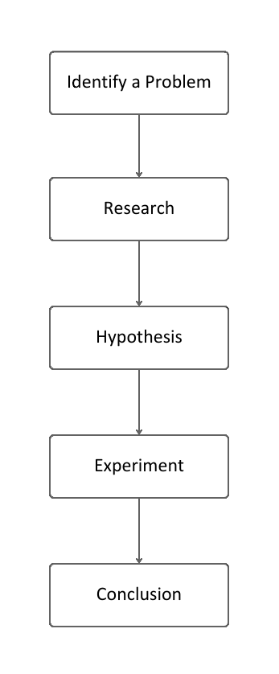
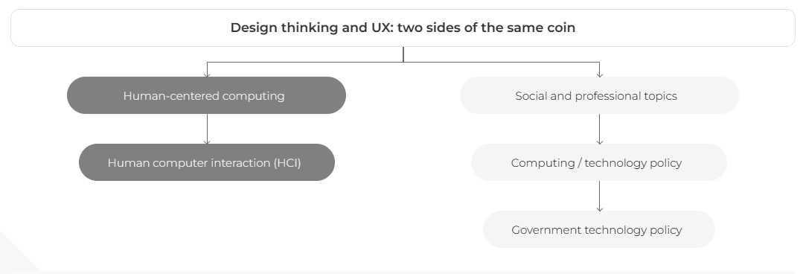

Purpose
What's the purpose of putting you guys through that nightmare of a website? It's twofold.
- Time trials such as these are important in usability studies. In actual time trials, data would be collected, as well as a balking rate.
- To show that the user experience is paramount in design. If the first part of the activity tasked you to buy a dog, it would be nearly impossible to do so because the site's so intentionally bad, and it's impossible to navigate.
This second activity is an oversimplification of what you're supposed to do; this website follows Fitts law by having that easy to find button. I tried to make it look good too, rather than the first site, which was intentionally ugly.
It took quite a lot of effort to attempt to break every single design principle out there, and if you got frustrated, we've achieved our goal. We also thought the spam was kinda funny.
You could keep reading for a short blurb on design thinking, UX and putting everything all together, or you could close this page and move on; the activity's over. Thanks for participating!

One more dog because why not?
Design Thinking
Design thinking is both a mindset and process to drive product development and innovation.
It's a human-centric, user-specific and solution-focused approach to problem solving. Rather than focus on creating something "novel", the product has to be usable; the user is more important than the product and the solution is more important than the problem.

The design thinking process, iterative and non-linear.
Although there are different models, applying design thinking to a project typically looks like:
- Empathize: Research users' needs to gain an empathetic understanding of the problem, setting aside personal assumptions.
- Define: Accumulate and analyze information from the Empathize stage to define core problems as problem statements and create "personas", fictional characters that represent the target user.
- Ideate: Generate ideas by thinking outside the box, looking for alternative ways to view the problem, and identifying innovative solutions.
- Prototype: An experimental phase to identify the best possible solution for each problem found, often involving paper prototyping or other inexpensive methods.
- Test: Rigorously test the prototypes. This phase is iterative, allowing for redefining and refining problems and solutions.
The design process is intended to be iterative and non-linear. These stages aren't sequential steps; they could be run in parallel or out of order and reflected back upon until a viable solution is found.
Design thinking doesn't only have to be applied to shipping products either, it can be applied to any problem. The fundementals of focusing on the solution and the user can be applied to any problem and can be incorporated into any process.
User Experience
At a macro level, UX (user experience) is the perceptions and responses a user has when using a product. This typically applies to software such as websites and applications that encompass a user interface (UI) but can be applied to any product. Without a good user experience, a product's usability is diminished; in the context of website design, a user may not be able to find what they're looking for, give up and may never return, costing future business. Again, creating a good user experience doesn't only apply to websites; the same concept of balking applies to any product or service.
Like design thinking, user experience can also be a user-centric mindset, emphasizing the importance of understanding and addressing the needs, preferences, and pain points of users throughout the entire product or service development process. However, UX isn't really a process, but there are processes that can be applied to UX design.
UX design is both an art and a science and requires a combination of both perspectives to achieve sucess because every descision should be rooted within a decision backed by science. The basic fundementals of the scientific method are applied to the design process.
Scientific method in UX flowchart.
This looks a little familiar to something we just talked about in the previous section. Research is the cornerstone of UX design; to gain insight into how to design a good user experience, the user must be understood. Both qualitative and quantitative data can be collected to observe patterns, preferences, and behaviors. The why has to also be understood.
To tie this back into the activity, we could imagine a scenario where the user would like to... buy a dog. That's the problem, research into user experience elements and the best way to coerce potential customers into checking out can be found online, so you come up with a hypothesis, such as "the user will be more likely to buy a dog if the website is easy to navigate". A website would then be created and tested on users. The feedback from the first activity would obviously be negative, so the website would be iterated upon and tested again, resulting in a better user experience.
This activity demonstrates some types of research and experiments used in UX. Quantitative experiments include finding the number of clicks to navigate the page, likart scales, time studies and more. Time trials, such as the one you just partook in, can be used to study macro level concepts (Fitts Law, navigation practices, etc.) or to prototype a website. Ideally, time trials would be more scientifically conducted than this one. While we tend to associate lower times with better usability and as the "goal" of a website, that may not always be the case; sometimes a website may want to keep the user on the page for as long as possible, such as a news website that wants to maximize ad revenue by making it difficult to navigate.
As for qualitative studies, well we went around and showed some people this monstronsity and they all cried because they saw God's final gift to planet Earth. I'm just kidding, but they all agreed it was a horrible experience. More formal qualitative studies would involve interviews, focus groups and surveys, but they all have the same goal of getting feedback from users, and compiling that data.
Both quantitative and qualitative results would be compiled and iterated over to gain insights into creating the targeted user experience. There's such a rabbit hole down the UX design process; there's even an entire major here (Experience Design) dedicated to it. We can't really cover everything in this seminar, but hopefully you got a taste of what UX is and how it's applied and the importance of research and scientific understanding.
Putting it all together
We saw many comparisions between design thinking and UX design, but we think that they should be interconnected, rather than separate entities. Rather than having a specific UX design process, the process behind design thinking can be applied to UX design.
Figure from an article that attempts to compare them as processes. Grey is UX and white is design thinking.
By encorporating design thinking into the development of a user experience, it can be taken to the next level because they share many of the same ideals, such as being user-centric and solution-focused. Design thinking adds iteration and non-linearity to UX design, which loops over research, design and testing to create a better product. Design thinking also holds the user at the center of the process, which may be lost in a traditional UX design process; that's how bad designs are created.
The scientific method in UX design closely mirrors the five "module" process seen in design thinking, empathize mirrors research, define mirrors ideate and the rest are fairly self-explainatory. Design thinking is a scientific method that should be applied to UX design.
Our activity largely focused on the scientific method behind UX; we showed one "iteration" of research to collect both qualitative and quantitative data. We think that's what the takeaway of the expert seminar should've been: to gain an understanding of some of the data collection methods used in UX design. However, we largely focused on design thinking and UX because there's a lot of confusion between the two, and we thought that the wide variety of conflicting opinions that we found online was interesting.
It should be "Design Thinking in UX Design" rather than "Design Thinking and UX Design".
Citations
- Linke, R. (2017, September 14). Design thinking, explained. MIT Sloan. https://mitsloan.mit.edu/ideas-made-to-matter/design-thinking-explained
- Studios, D. K. I., Knemeyer, D., Studios, I., Profile, I. S., Machinery, A. for C., & Metrics, O. M. A. (n.d.). Design thinking and UX: Two sides of the same coin: Interactions: Vol 22, no 5. Interactions. https://dl.acm.org/doi/abs/10.1145/2802679
- Maguire, M. (1970, January 1). Using human factors standards to support user experience and agile design. SpringerLink. https://link.springer.com/chapter/10.1007/978-3-642-39188-0_20
- What is Design Thinking & Why is it important?: HBS Online. Business Insights Blog. (2022, January 18). https://online.hbs.edu/blog/post/what-is-design-thinking
- Dam, R. F., & Siang, T. Y. (2023, December 6). Personas — a simple introduction. The Interaction Design Foundation. https://www.interaction-design.org/literature/article/personas-why-and-how-you-should-use-them
- UX Design: Science or art? - aela school. Aela School - Where Ambitious Designers Thrive. (2022, August 23). https://aelaschool.com/en/userexperience/ux-design-science-art/
- Stout, A. (2022, December 19). The Science of User Experience. UXmatters. https://www.uxmatters.com/mt/archives/2022/12/the-science-of-user-experience.php
- YouTube. (2021, February 23). Design thinking in ux. YouTube. https://www.youtube.com/watch?v=rH4zdpKtUMw